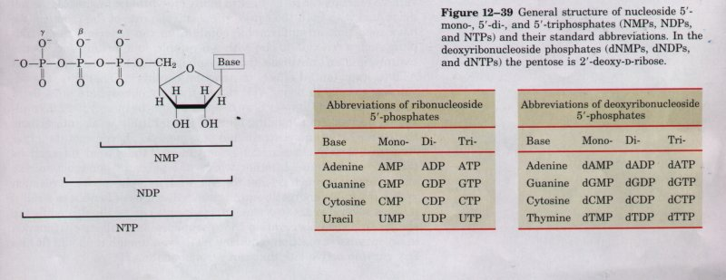
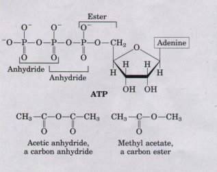
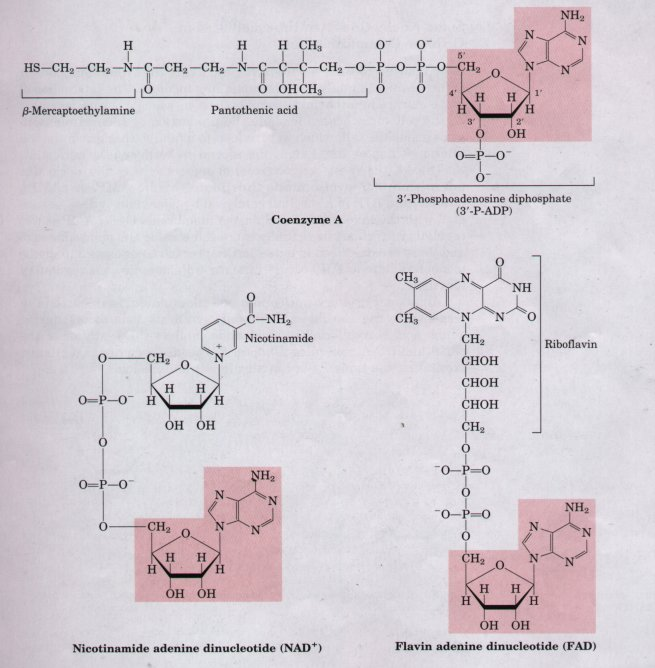
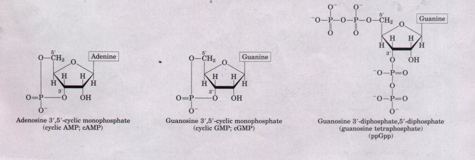

In addition to their roles as the subunits of nucleic acids, nucleotides have a variety of other functions in every cell: as energy carriers, components of enzyme cofactors, and chemical messengers.
Nucleotides may have one, two, or three phosphate groups covalently linked at the 5' hydroxyl of ribose. These are referred to as nucleoside mono-, di-, and triphosphates, respectively (Fig. 12-39). Starting from the ribose, the three phosphates are generally labeled α, β, and γ. Nucleoside triphosphates are used as a source of chemical energy to drive a wide variety of biochemical reactions. ATP is by far the most widely used, but UTP, GTP, and CTP are used in specific reactions. Nucleoside triphosphates also serve as the activated precursors of DNA and RNA synthesis, as will be described in Chapters 24 and 25.

| .The hydrolysis of ATP and the other nucleoside triphosphates is an energy-yielding reaction because of the chemistry of the triphosphate structure. The bond between the ribose and the αphosphate is an ester linkage. The α-β and β-γ linkages are phosphoric acid anhydrides (Fig. 12-40). Hydrolysis of the ester linkage yields about 14 kJ/mol, whereas hydrolysis of each of the anhydride bonds yields about 30 kJ/mol. In biosynthesis, ATP hydrolysis often drives less favorable metabolic reactions (i.e., those with ΔG0'> 0). When coupled to a reaction with a positive free-energy change, ATP hydrolysis shifts the equilibrium of the overall process to favor product formation (recall the relationship between equilibrium and free-energy change described in Chapter 8) |  Figure 12-40 The phosphate ester and phosphoric acid anhydride bonds of ATP. Hydrolysis of an anhydride bond yields more energy than hydrolysis of the ester. A carbon anhydride and ester are shown for comparison |
It is appropriate to ask why ATP serves as the primary carrier of energy in the cell. The chemical energy potential of pyrophosphate (~33 kJ/mol), a much simpler molecule, is almost identical to that of ATP because pyrophosphate also contains a phosphoric acid anhydride. Pyrophosphate would be so much easier to synthesize than ATP that the selection of ATP at first seems to contradict evolutionary logic.
The explanation can be found in the fundamental energetic principles governing every chemical reaction. In promoting chemically unfavorable reactions such as those in many biosynthetic processes, the cell must deal with both the equilibrium and the rate of the reaction. We have seen that an unfavorable equilibrium can be overcome by coupling such a reaction to one with a favorable equilibrium, such as the hydrolysis of an anhydride. Pyrophosphate would be just as effective as ATP in its potential effects on reaction equilibria. Therefore, the advantage to cells in using ATP rather than pyrophosphate must lie in reaction rates. In Chapter 8 we described how the energy used in catalysis is derived from binding energy, the multiple weak interactions that occur between substrate and enzyme. ATP, because of its larger structure, clearly can contribute many more of these weak interactions than pyrophosphate. In other words, the potential for reaction rate enhancement is much greater for ATP than pyrophosphate. A reaction with a favorable energetic equilibrium will not be of benefit to a cell if it takes several years to occur. This principle can be illustrated by the simple empirical observation that pyrophosphate will rarely function in an enzymatic reaction requiring ATP, even though it should fit into any enzyme active site that can accommodate ATP.
A variety of enzyme cofactors serving a wide range of chemical functions include adenosine as part of their structure (Fig. 12-41). They are unrelated structurally except for the presence of adenosine. In none of these cofactors does the adenosine portion participate directly in the primary function, but removal of adenosine from these structures generally results in a drastic reduction of their activities. For example, removal of the adenosine nucleotide (3'-P-ADP; see Fig. 12-41) from acetoacetyl-CoA reduces its reactivity as a substrate for β-ketoacylCoA transferase (an enzyme of lipid metabolism) by a factor of 106. Although the reason for this requirement for adenosine has not been examined in detail, it must involve the binding energy between enzyme and substrate (or cofactor) that is used both in catalysis and to stabilize the initial ES complex (Chapter 8). In the case of CoA transferase, the nucleotide appears to be a binding "handle" that helps to pull the substrate into the active site. Similar roles may be found for the nucleoside portion of other nucleotide cofactors.

Figure 12-41 Enzyme cofactors and coenzymes incorporating adenosine in their structure. The adenosine portion is shaded in red. Coenzyme A functions in acyl group transfer reactions; NAD' participates in hydride transfers; FAD, the active form of vitamin B2 (riboflavin), participates in electron transfers. Another coenzyme incorporating adenosine in its structure is 5'-deoxyadenosylcobalamin, the active form of vitamin B12 (see Box 16-2). This coenzyme is involved in intramolecular group transfers between adjacent carbons.
Now we may ask why adenosine, rather than some other large molecule, is used in these structures. The answer here may involve a kind of evolutionary economy. Adenosine is certainly not unique in the amount of potential binding energy it can contribute. The importance of adenosine probably lies not so much in some special chemical characteristic, but rather that an advantage existed in making one compound a standard. Once ATP became the standard source of chemical energy, systems developed to synthesize ATP more efficiently than the other nucleotides; because it is abundant, it becomes the logical choice for incorporation into a wide variety of structures. The economy extends to protein structure. A protein domain that binds adenosine can be used in a wide variety of different enzymes. Such a structure, called a nucleotide-binding fold, is found in many enzymes that bind ATP and nucleotide cofactors.
Cells respond to their environment by taking cues from hormones or other chemical signals in the surrounding medium. The interaction of these extracellular chemical signals (first messengers) with receptors on the cell surface often leads to the production of second messengers inside the cell, which in turn lead to adaptive changes in the cell interior (Chapter 22). Often, the second messenger is a nucleotide.
One of the most common second messengers is the nucleotide adenosine 3',5'-cyclic monophosphate (cyclic AMP, or cAMP), formed from ATP in a reaction catalyzed by adenylate cyclase, associated with the inner face of the plasma membrane. Cyclic AMP serves regulatory functions in virtually every cell outside the plant kingdom, and these are described in detail in Chapter 22. Guanosine 3',5'-cyclic monophosphate (cGMP) occurs in many cells and also has regulatory functions.
Another regulatory nucleotide, ppGpp, is produced in bacteria in response to the slowdown in protein synthesis that occurs during amino acid starvation. This nucleotide inhibits the synthesis of the rRNA and tRNA molecules (Chapter 27) needed for protein synthesis, preventing the unnecessary production of nucleic acids.
